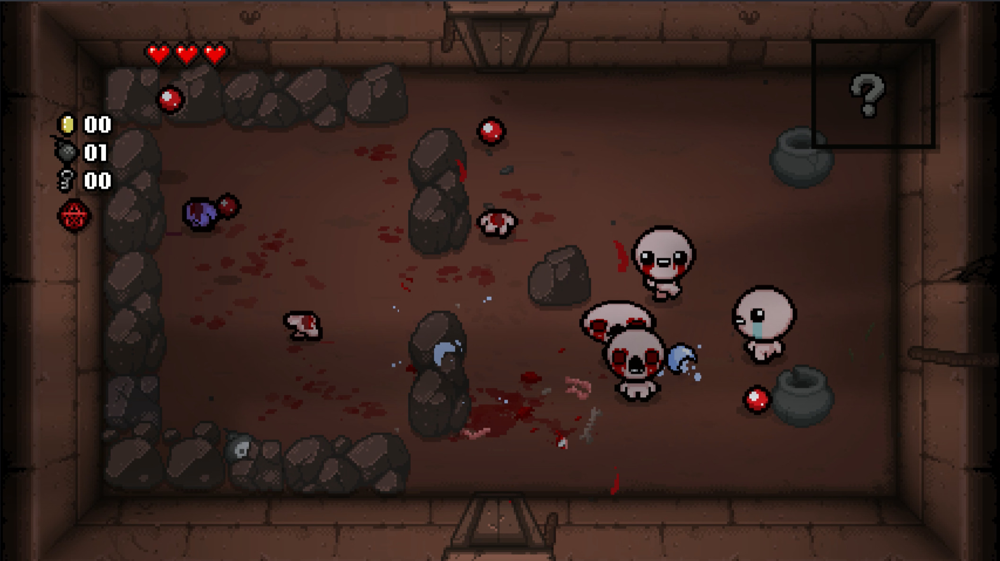

로그라이트, 액션 어드벤처, 호러, 탑뷰 슈팅
15,500원
20시간~30시간
눈물을 무기로 사용하는 소년 아이작이 지하 세계를 탐험하며 괴물들과 싸우는 로그라이크 액션 게임.
Nicalis, Inc., Edmund McMillen
인게임 캡처 https://store.steampowered.com/app/250900/The_Binding_of_Isaac_Rebirth/